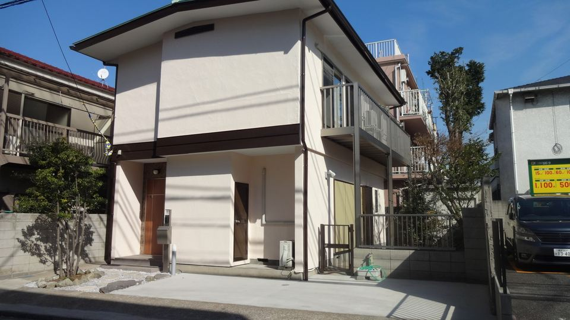

相続した借地上の空き家を、返さずに「貸す」という選択
- ご相談
- ご両親が亡くなり、相続人であるご相談者様が引き継いだ戸建てが空き家になっていました。
- 課題
- 土地は借地権（旧借地法）。当初は、地主様へ土地を無償で返還するお気持ちでした。
- 専門家の視点
- 返還する前に、リフォームして賃貸する選択肢をご提案。フルリノベーションで建物の耐用年数を延ばす計画を立てました。
- 結果
- 改修費約1,100万円に対し家賃約18万円、表面利回り約20％（実質約16％）で、約7年で投資を回収する計画に。将来、借地権付建物として売却する道も残りました。